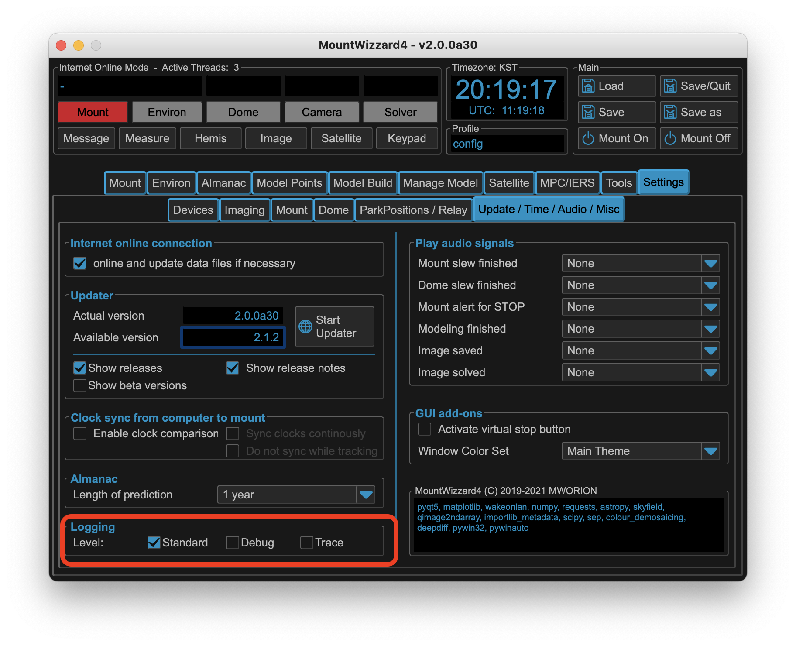

Troubleshooting Q&A and hints¶
Based on many feedbacks and solved issues, please check first if your question already has some answers or at least some hints how to improve the situation.
Installation¶
Despite MountWizzard4 will run on many platforms, your setup might have some special constrains which need to taken into account. In the following I try to refer to the important ones.
Python¶
MountWizzard4 version 4 runs on python 3.10 - 3.13. On other versions scripts will fail and MountWizzard4 will not run.
On windows, you need to select if you are using 32bit or 64bit python depending on drivers you are using for your devices. 32bit and 64bit could not be mixed !
Normally you will use a preinstalled python version (if that fits) or use a python version from python.org. Please do not use other sources.
As MountWizzard4 lives in a virtual environment, updating python does not automatically update the virtual environment. If you need to update python for any reason there are two possibilities: New install of MountWizzard4 in a new work dir or deleting the venv folder in your actual work dir and running the install script again.
MountWizzard4 App¶
There is no need for running MountWizzard4 with admin rights. If so, something is wrong. MountWizzard4 will run in a virtual environment. Please do not try to install MountWizzard4 as a system application as this might interfere with other installations.
MountWizzard4 does not behave as expected: please post a log and describe the procedure in steps. If you could add screen shots this helps a lot.
MountWizzard4 Updating does fail¶
Since v2 MountWizzard4 should be able to handle all updates / downgrades with the internal updater. From v1 to v2 windows needs the MountWizzard4_Update.bat script as the internal updater can’t free used windows libraries. MacOSx and Linux should be fine.
Scripts¶
Installation does not need admin rights. If so, please check the folder locations. In windows10 desktop and some other folder are not writable for applications.
The scripts do nothing special, you could use for many topics manual commands as well. Unfortunately the scripts could not manage all special setups, but feel free to change them accordingly.
Mount connectivity¶
MountWizzard4 only supports IP links. As data latency is a critical topic, please use a wired connection to the mount. Wireless connection might have some drops in connections (you will see this with mount button switching red / green multiple times)
Please check your IP settings, gateways if first connections fail.
If your WOL does not work, please check MAC address, WOL being enabled. If you switched your mount manual off and cut the power supply, sometimes WOL does not work the first time. You need a redundant path if you are in a remote site!
Basically multiple instances of MountWizzard4 could be up and running, but MountWizzard4 take up to 6 parallel connections to the mount. The documentation allows in total 10 connection each of the two ports (3490, 3492). This might overload the 10 micron system.
Device connectivity¶
ASCOM Device does not work / connect¶
ASCOM uses different types of drivers for the devices. Some of them need an environment in 32bit or 64bit like you application. So if you are using an 64bit application for imaging your drivers will be 64bit compatible. In this case the python installation also needs to be 64bit. Otherwise the connection will fail.
Modern CMOS cameras with large sensors normally work on 64bit mode.
Many device driver only support one connection at the same time. So if you imaging application already took a device, MountWizzard4 might be not able to connect anymore.
Please test your setup running with ASCOM suite (included in ASCOM platform installation) or any other programs you good know to test device functions outside MountWizzard4.
Model building¶
Updating IERS/SAT/MPC data¶
Data could not be fetched from internet¶
You need an internet connection and set MountWizzard4 in online mode to download new data for upload.
Tracking satellites¶
Logfiles and reports¶
Where could I change the log level ?¶
The log level could be changed under settings misc. The default setting is warning. If you need analyzes, please go to debug. If a driver or mount connectivity is related as well, please go to trace. Please be aware that log file especially in trace mode could become big.
{kind=link}